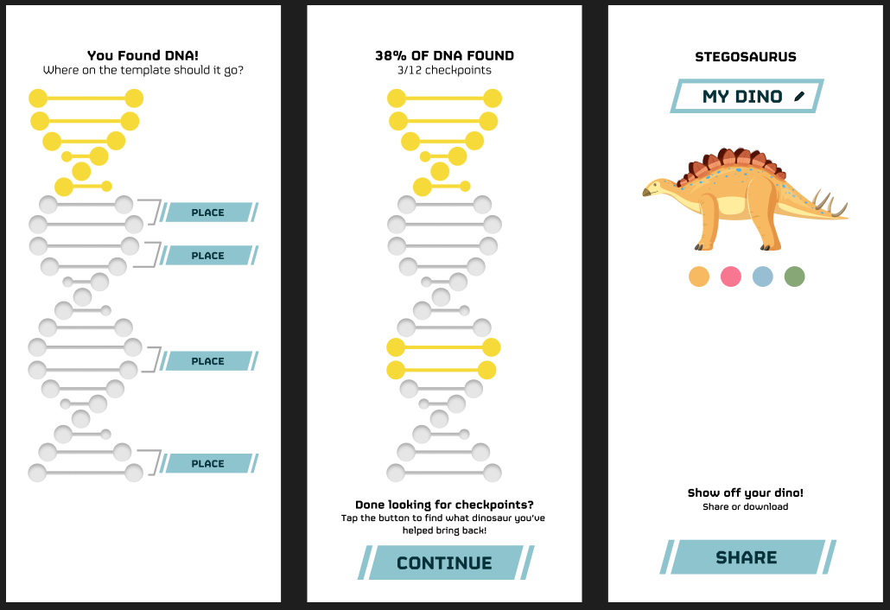

Jurassic Farm
I partnered with a developer to create the maze game Jurassic Farm for Andelin Family Farm in Sparks, Nevada. This game keeps visitors entertained as they walk through and turns a corn maze into a true attraction that gets people coming back again and again.
Strategy & Scope
I had created a few games for previous years' corn mazes of Andelin Family Farm. They were typically more educationally focused, with information tied to the theme of the corn maze design. For 2025 I wanted to step up the quality of the game itself and turn it into an integral part of the corn maze. This could be used in marketing to generate excitement about the maze, be an additional activity for visitors (leading to longer visits and higher spend), and increase word-of-mouth advertising and return visits after the experience.
Designing a Good Game
The two main focuses were creating a game that is easy to understand and easy to share. I determined that building on the simple checkpoint system would be the best course of action. I took inspiration from Pokemon TCG and other collection-type games: Find all of the checkpoints, collect all the dinosurs, share those dinos with your friends. Very easy feedback loop.
Much of the designing process was deciding what to cut out. My first prototype had more complex game mechanics. After finding a fossil dig site checkpoint, players would collect the DNA from the dig site and decide where on the genome to place it. Placement affected which dinosaur the user would receive at the end of the game. Though perhaps more fun for some, it added nothing that the player could do, only being an extra step in collection. Interactivity for interactivity's sake is not a good experience.
Early digital prototype screens.